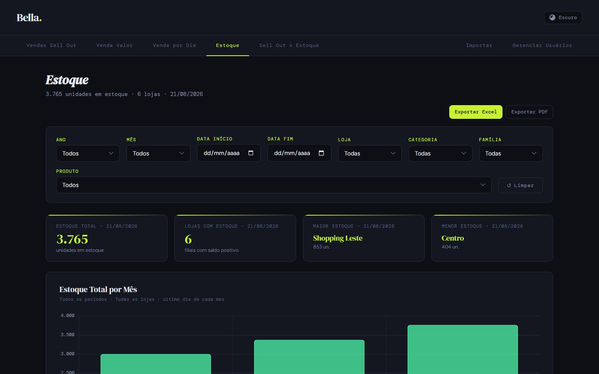
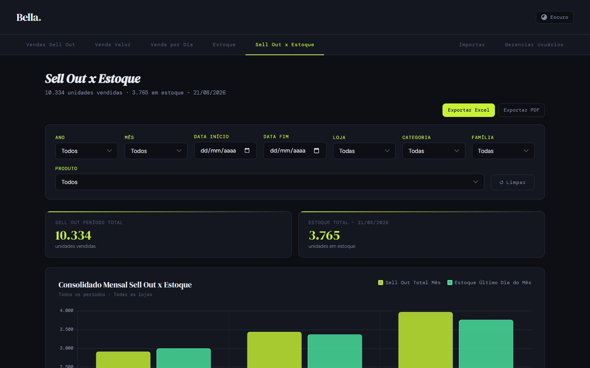
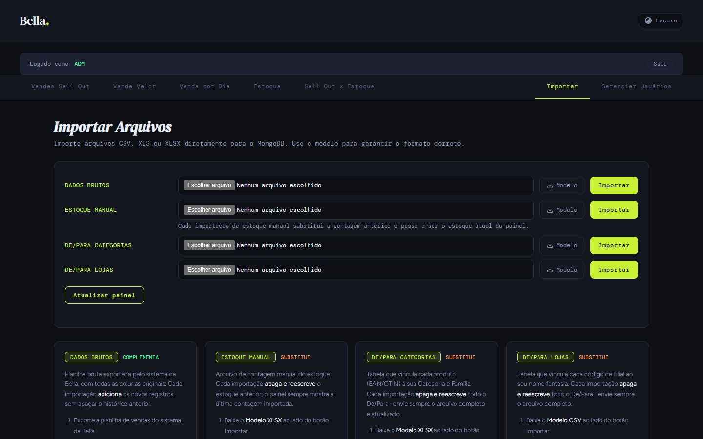
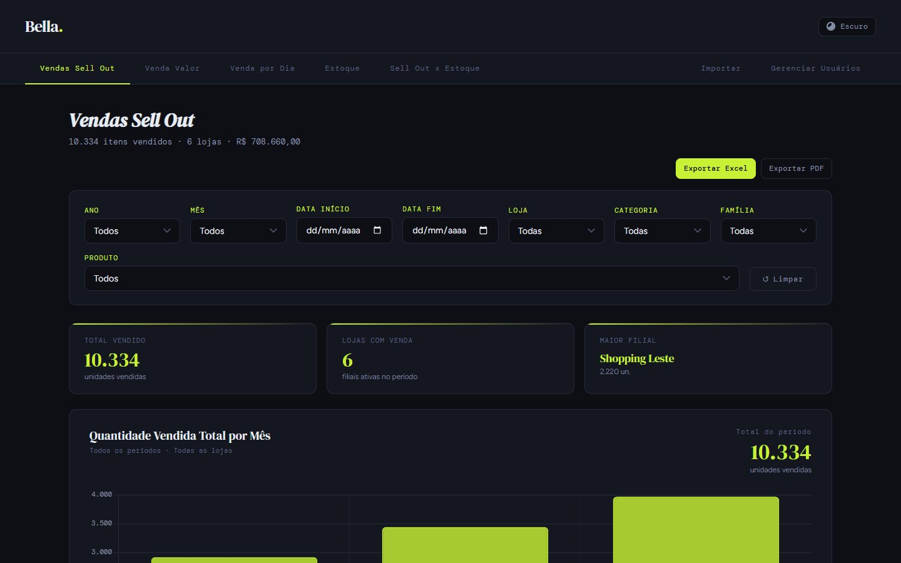
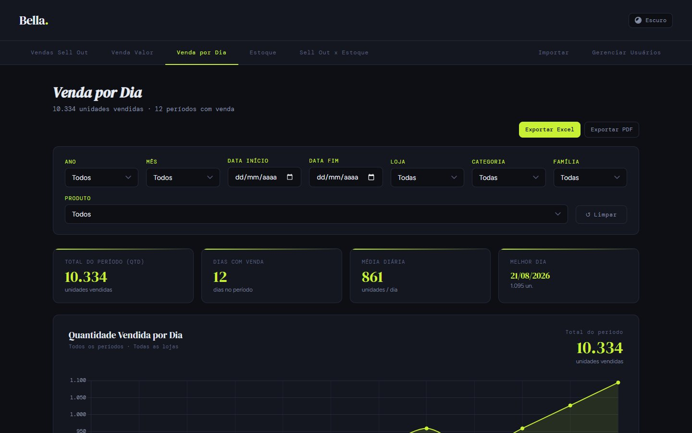

Quando o estoque vem da loja.
Neste cliente, a venda chega do sistema dele, mas o estoque não: ele é contado à mão nas lojas. O painel passou a gerar a planilha de contagem já pronta, validar o que volta e mostrar a posição mais recente ao lado do sell out, sem ninguém montar planilha.

A venda tem sistema. O estoque tem prancheta.
A diretoria comercial queria acompanhar este cliente como os outros: sell out em quantidade e valor, estoque e o cruzamento dos dois. A extração do sistema do cliente trazia a venda, mas a posição de estoque dos nossos produtos nas lojas vinha de contagens manuais feitas nas lojas e registradas em planilhas avulsas, cada uma num formato.
Sem padrão na contagem, não há comparação entre lojas nem entre datas. O problema começava antes do painel: na planilha em branco.
A base técnica dos painéis de sell out, com uma fonte nova de estoque.
O projeto parte da mesma arquitetura do Painel Vitta: importação com campos pré-calculados, cache, desfazer por lote, histórico e usuários com papéis. A diferença está no estoque, que ganhou coleção, importação, validação e modelo próprios.
Sistema do cliente
Dados brutos de venda por loja e produto, com mês de referência quando o arquivo é mensal. Alimentam as abas de venda.
Contagem nas lojas
Planilha padronizada com data da contagem, filial, produto, EAN e quantidade. O painel mostra sempre a contagem mais recente.
Quatro arquivos, cada um com sua regra.
| Base | Colunas | Ao importar | Cuidados |
|---|---|---|---|
| Dados brutos | Data ou mês de referência, Loja, GTIN/PLU, Produto, Venda (Qtd), Venda (R$) | Complementa o histórico | Nomes de coluna do mês normalizados; valores do XLSX preservados na importação progressiva |
| Estoque manual | Data da Contagem Filial Categoria Nome do Produto EAN Quantidade em Estoque | Substitui a contagem anterior | Recusa arquivo sem as colunas obrigatórias, sem linhas válidas ou totalmente zerado |
| De/Para Categorias | Código de barras (aceita mais de um nome de coluna), categoria, família, nome do produto | Substitui o mapeamento | Classifica venda e estoque pelo mesmo de-para |
| De/Para Lojas | Cod_Loja Nome_Fantasia | Substitui o mapeamento | Venda de filial ainda sem mapeamento continua nos totais |
Baixar, contar, importar, ver.
O modelo de contagem nasce dos dados atuais.
O botão de modelo não entrega uma planilha vazia genérica. Ele monta a contagem a partir do que o painel já sabe:
Cada loja × cada produto
As lojas vêm do de-para de lojas e os produtos do de-para de categorias. Ninguém esquece um item nem digita o EAN errado.
A última contagem como ponto de partida
Se já existe contagem, o modelo vem com a quantidade da data mais recente. Sem histórico, a coluna fica em branco.
Funciona mesmo com o banco iniciando
Se o banco ainda está subindo ou a geração falha, o servidor entrega um modelo base guardado junto com a aplicação.
Só as colunas certas
Os modelos de importação saem sem as colunas calculadas pelo painel, para o arquivo voltar exatamente no formato esperado.
Progresso real, valores intactos.
As abas de sempre, com o estoque contado.
A interface segue a família de painéis de sell out (Vendas Sell Out, Venda Valor, Venda por Dia, Estoque, Sell Out × Estoque, Importar e Gerenciar Usuários). Os filtros foram refinados aqui: selecionar todas as opções de uma vez, marcar e desmarcar tudo e manter o gráfico mensal ao filtrar uma loja.




Três dias de construção, um mês até a demonstração.
- Painel no arEstrutura inicial, barra de progresso, validação do estoque, filtros com “selecionar tudo”, mês de referência nos dados brutos e servidor iniciando antes do banco.
- Modelos inteligentesProgresso real por lotes, valores do XLSX preservados, modelos gerados a partir dos dados atuais, modelo de contagem com fallback e filiais sem de-para nos totais.
- Demonstração públicaVersão estática com API simulada no navegador, para portfólio.
Da mesma família: Painel Vitta, a base técnica, e Painel Atlas, com o de-para intermediário de GTIN.
Em produção no Koyeb; aqui, no navegador.
- HTML, CSS e JS puro
- envio em lotes com progresso real
- 52 rotas, cache em memória
- gera os modelos de contagem
- login, papéis e reset por e-mail
- dados brutos e estoque manual
- de-paras, logs e usuários
Nesta demonstração não há servidor nem banco. Um módulo (mock-api.js) intercepta as chamadas do painel no navegador e responde com lojas, produtos e números inventados. O front-end é o mesmo da produção. A planilha de contagem incluída no repositório também é fictícia.
Tecnologias
Abra a aba Estoque e depois Sell Out × Estoque.
Filtre uma categoria e compare a venda do mês com o estoque contado nas lojas.